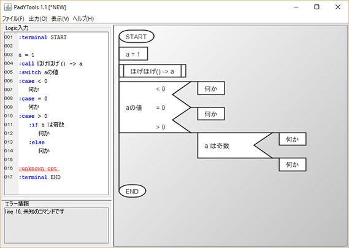
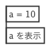
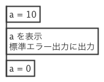
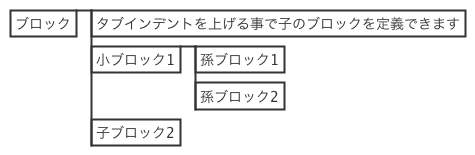

PadTools 1.4

概要
PadTools はPAD図を活用するために、直感的な記法と、画像ファイルへのエクスポート機能を提供します。 思考を止めず記述できることを目指しています。
動作環境
- Windows10 JRE8
上記の環境で動作を確認しております。 その他環境でも、JRE8が動作するOSであれば動作する可能性がありますが、 上記環境以外では動作確認をおこなっておりません。
利用法
SPD(Simple PAD Description)文法
PadToolsではロジックを記述する際に SPDフォーマットを使用します。 本節では、SPDフォーマットの文法について説明を行います。
ブロック
1行がPADの１ボックスと対応します。 ただし、空白行や「#」(シャープ)から始まる行は読み飛ばします。
例:
#コメント
a = 10
a を表示
↓（PADへ変換）

ブロック内の改行
文中に「@」(アットマーク)を使用した場合、改行文字として扱われます。 文末に「@」が現れた場合は、改行を行うとともに、 次の行も含めてPADの１ボックスを作成します。
例1:
a = 10
a を表示@標準エラー出力に出力
a = 0
↓（PADへ変換）

例2:
a = 10
a を表示@
標準エラー出力に出力
a = 0
↓（PADへ変換）
親子関係
タブ文字でインデントをつけることで、 ブロックの親子関係を記述できます。
例:
ブロック
タブインデントを上げる事で子のブロックを定義できます
小ブロック1
孫ブロック1
孫ブロック2
子ブロック2
↓（PADへ変換）

命令文(:if, :while, ...)
条件分岐や繰返し文など、特別なボックスを作成するには、 「:」(コロン)から始まる命令文を使用します。
補足: 文頭で「:」を使用した場合のみ命令文と認識されます。 文中で「:」を使用した場合は、命令文ではなく通常の文字として扱われます。
PadTools では以下の命令文が定義されています。
- :comment … コメントを定義する
- :terminal … 端子を定義する
- :call … 関数呼び出しを定義する
- :if … 条件分岐（真／偽）を定義する
- :else … :if と組み合わせて使用し、偽の場合を定義する
- :switch … 条件分岐（任意のケース）を定義する
- :case … :switch と組み合わせて使用し、指定のケースを定義する
- :while … 前判定の繰り返し処理を定義する
- :dowhile … 後判定の繰り返し処理を定義する
例:
:terminal 開始
命令
:comment コメント文
:call 関数呼び出し
中身
:if 条件式
真の場合
:else
偽の場合(:else以下は省略可能)
:switch 条件
:case ケース1
ケース1の中身
:case ケース2
ケース2の中身
:case ...
ケース文は必要に応じていくつでも追加できます
:while 繰り返し条件（先判定）
中身
:dowhile 繰り返し条件（後判定）
中身
:terminal 終了
↓（PADへ変換）

ダウンロード
ライセンス
Copyright (c) 2015-2021 naou
Released under the MIT license
リンク
- GitHub https://github.com/knaou/padtools
- naoblo https://nablo.net/